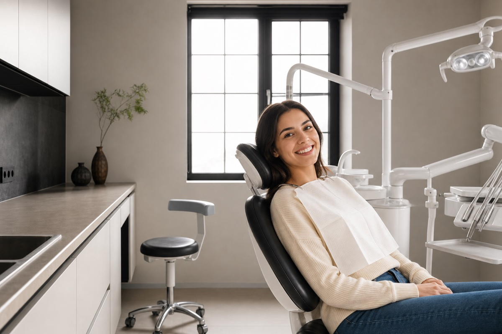

Заметный результат
Осветление эмали на несколько тонов уже за один визит — улыбка выглядит ярче и естественнее.
Дарим белоснежную, естественную улыбку с помощью безопасных профессиональных систем. Бережно осветляем эмаль на несколько тонов, убираем пигментацию от кофе, чая, вина и курения — и защищаем эмаль реминерализующими составами после процедуры.

Осветление эмали на несколько тонов уже за один визит — улыбка выглядит ярче и естественнее.
Только сертифицированные системы без агрессивного воздействия, после — реминерализация и снижение чувствительности.
В стоимость входит диагностика, профессиональная чистка, само отбеливание и рекомендации по уходу.
Врач оценивает состояние полости рта, определяет естественный цвет зубов и обсуждает ваши пожелания.
Снимаем налёт и отложения — это нужно для равномерного и предсказуемого результата отбеливания.
Наносим профессиональный осветляющий состав, который бережно действует на эмаль.
Наносим реминерализующие составы — они снижают чувствительность и насыщают эмаль минералами.
Применяем передовые профессиональные отбеливающие системы. Все материалы сертифицированы и одобрены для применения в стоматологии — заметное осветление без вреда для тканей зуба.
Подходит ли вам отбеливание — врач определит на консультации после осмотра. Ниже основные ориентиры.
В стоимость входит комплексная процедура. Точные рекомендации врач даст после осмотра.
Результат индивидуален и зависит от образа жизни (красящие продукты, курение) и особенностей эмали. При соблюдении рекомендаций врача эффект сохраняется от 1 до 3 лет.
Временное повышение чувствительности — нормальная реакция, которая обычно проходит за несколько дней. Мы используем защитные составы и даём рекомендации по уходу.
Комплекс: диагностика, профессиональная чистка, само отбеливание и рекомендации по пост-уходу за полостью рта.
Нет. Мы применяем сертифицированные системы без агрессивного воздействия, а после процедуры укрепляем эмаль реминерализующими составами.
Врач оценит состояние эмали и подберёт безопасный метод отбеливания именно для вас.